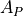
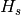
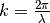
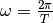
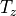
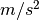
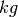
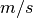

Terminology¶
The following terminology is used in MHKiT:
Term |
Definition [unit] |
|---|---|
 |
Projected capture area [m^2] |
BS |
Bretschneider spectrum |
Equivalent diameter [m] |
|
|
Energy [J] |
|
Incident wave [m] |
|
Frequency [Hz] |
|
Exceedance probability [%] |
Fr |
Froude Number |
|
Gravity [m/s/s] |
|
Water depth from bottom to water surface (e.g. SWL) [m] |
|
Wave height [m] |
 |
Significant wave height, mean wave height of the tallest third of waves [m] |
Spectrally derived significant wave height [m] |
|
|
Wave energy flux [W/m] |
JS |
JONSWAP spectrum |
|
Capture length [m] |
|
Wave number,  [rad/m] |
|
Mass [kg] |
Spectral moment of k, for k = 0,1,2,… |
|
|
Wave frequency,  [rad/s] |
|
Power [W] |
PM |
Pierson-Moskowitz specturm |
|
Discharge [m^3/s] |
|
Density [kg/m3] |
|
Spectral density [m^2/Hz] |
SWL |
Still Water Line |
|
Energy period [s] |
|
Mean wave period [s] |
|
Peak period [s] |
 |
Zero-crossing period [s] |
|
Velocity [m/s] |
|
Velocity calculated for river and tidal modules [m/s] |


Units¶
The methods in MHKiT use the MKS (meters-kilograms-seconds) system, and assume data is stored in SI units, for example:
Acceleration = 
Distance =

Energy =

Frequency =
Mass = 
Power =

Pressure =
Time =

Velocity = 
Voltage =

Volume =
Note
How do we want to handle angles? Radians? Degrees?